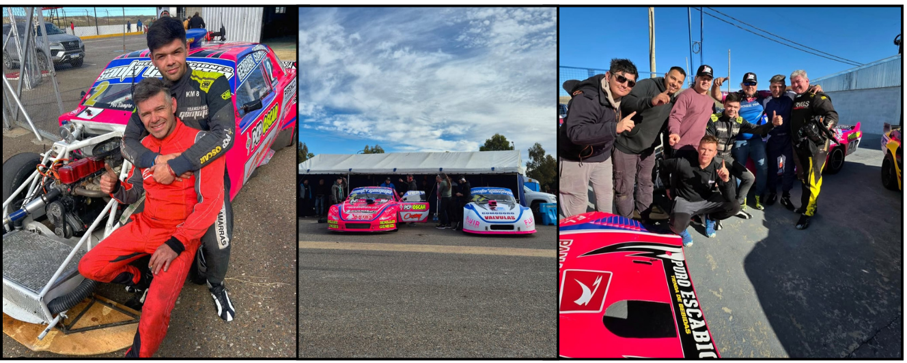

La pasión por el automovilismo que se hereda

Las categorías zonales no solo destacan por el espectáculo en pista, sino también por las historias que las sostienen. Historias de esfuerzo, herencia y pasión. En este universo, hay familias que no sólo compiten, sino que viven el automovilismo como una forma de vida. La familia Otero es un ejemplo claro: respiran motores, transitan circuitos y transmiten su amor por las carreras de generación en generación.
Marcelo Otero, campeón del Turismo Carretera Austral en 2014, es uno de los protagonistas históricos de la categoría. Hoy, además de seguir compitiendo, volvió a las pistas compartiendo equipo y garaje con su hijo, Miguel Otero, actual referente del TCA y líder del campeonato. A su lado, Leo Otero, hermano de Miguel e hijo de Marcelo, también forma parte del proyecto familiar desde un rol clave: el trabajo mecánico y técnico, fundamental para que los autos rindan al máximo. Y la pasión no termina ahí: Lalo, hermano de Marcelo, también dice presente cada fin de semana en la categoría R12, manteniendo viva la llama de la competencia.
La historia de los Otero es mucho más que una sucesión de apellidos en una planilla. Es el retrato de lo que el automovilismo zonal significa para quienes lo sienten desde adentro: una pasión que se transmite en el taller, en la pista, en la radio del auto y en cada abrazo familiar al final de una carrera. Porque en el sur, los motores no sólo rugen en los circuitos: también laten en el corazón de las familias que lo hacen posible.
Cuenta Vueltas 77 – Fecha